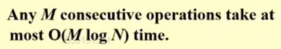
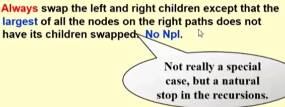
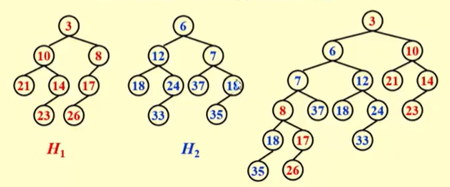
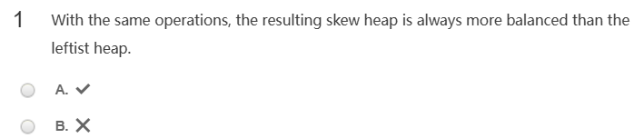
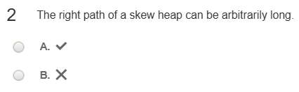
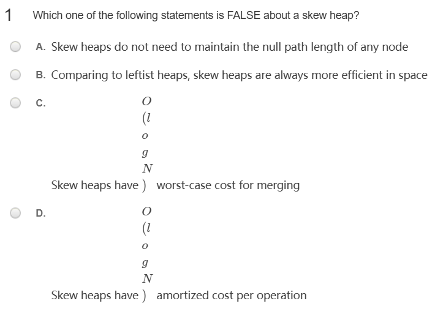
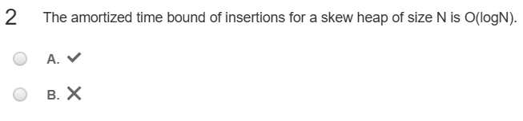

Skew Heaps¶
Definition¶
A simple version of the leftist heaps, don't care about the Npl.
Target¶

The merge method¶

- 需要注意的是，skew heap右边路径最大的节点不需要交换左右孩子
Ex

在这个例子中，对于18，35组成的子堆来说，因为18是其右边路径上最大的节点，因此我们不需要交换它的左右孩子
Problem¶
1¶

B
应该是leftist heap更平衡
2¶

A
因为skew tree的交换时时都在发生，因此有可能会出现右路径特别长的情况
3¶

C
B是对的，因为不需要储存Npl；C摊还时间是\(O(\log N)\)，最差的时间大于\(\log N\)；D正确
4¶

A
正确的